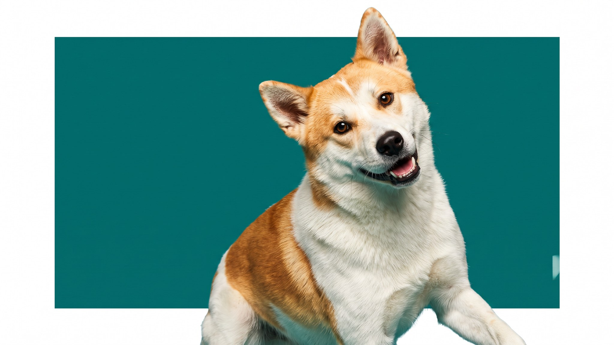

В 1988 году на Олимпиаде в Сеуле джиндо шёл в параде как национальный символ Кореи. В 1980 году правительство страны взяло породу под охрану государства. За этим стоит конкретная история: джиндо по имени Пэктуни вернулся к первому хозяину через семь месяцев, пройдя около 300 км. Случай задокументирован. Если вы хотите собаку, преданную вам так же, как джиндо предан одному хозяину, сначала прочитайте, что за этой преданностью стоит.
🐾 У вас корейский джиндо?
AnimaLife соберёт уход под породу: к каким болезням есть склонность, что проверять по возрасту, чем кормить и когда пора к врачу. Бесплатно, прямо в мессенджере.
Собрать план ухода → Собрать в MAX →
У вас iPhone? AnimaLife есть в App Store
Джиндо не злобная и не агрессивная собака. Но она не универсальная. Порода выбирает одного человека и строит с ним глубокую связь. Остальные члены семьи принимаются со временем, но чужие люди для джиндо навсегда остаются чужими. Сторож из него выходит хороший, но ранняя и постоянная социализация обязательна.
Характер сдержан, независим. Джиндо оценивает ситуацию сам и далеко не всегда соглашается с решением хозяина. Дрессировка работает через уважение и последовательность, никакого давления и жёсткости. Собака запомнит принуждение и закроется или ответит.
Джиндо выводили на острове Чиндо как охотничью собаку. Инстинкт преследования никуда не делся: кошки, мелкие животные и всё, что движется быстро, превращаются для него в добычу. С другими собаками бывают конфликты, особенно с кобелями.
Держать джиндо в открытом дворе без надёжного забора практически невозможно. Порода прыгает, лазает и находит слабые места в ограждениях. Отзыв с улицы, когда собака взяла след, почти не работает. Поводок на прогулке за городом обязателен.
Джиндо вылизывается сам, почти не имеет собачьего запаха, легко приучается к туалету. Это одна из самых чистоплотных пород среди собак. Владельцы часто сравнивают их с кошками именно в этом.
Шерсть двойная. Дважды в год, весной и осенью, линька обильная: шерсть сыплется охапками несколько недель. В этот период вычёсывание фурминатором или щёткой нужно ежедневно. Вне линьки достаточно раз в неделю.
Джиндо активен и выносилив. Прогулка два раза по полчаса не закроет его потребность в движении. Нужна ежедневная серьёзная нагрузка: бег, апортировка, работа нюхом. Скучающий джиндо начинает искать себе занятие самостоятельно, и результат этих поисков редко радует хозяина.
Порода хорошо справляется с треккингом, аджилити и поисковой работой. Любая задача, где собака думает и двигается, подойдёт. Простое сидение в квартире без выхода для этой породы не вариант.
🐾 Ваш питомец — корейский джиндо?
Заведите профиль в AnimaLife: приложение запомнит породу, возраст и вес и будет подсказывать по уходу именно для неё. Вопросы AI-ветеринару — круглосуточно и бесплатно.
Завести профиль → Завести в MAX →
У вас iPhone? AnimaLife есть в App Store
🐾 Понравился разбор?
Подпишитесь на канал — каждый день разбираем по одному тревожному симптому у кошек и собак: что в пределах нормы, а когда пора к врачу. Подпишитесь, чтобы не пропустить разбор, который может спасти здоровье вашего питомца.
Материал носит информационный характер и не заменяет очную консультацию ветеринара.